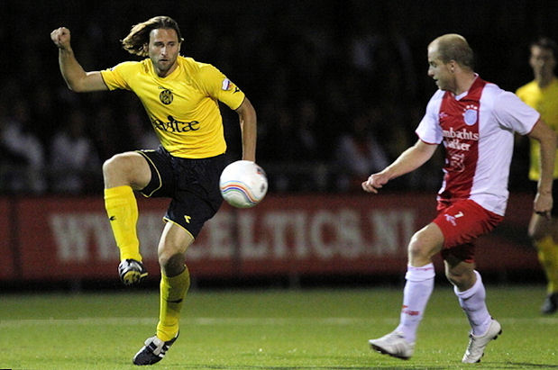

Roda JC had woensdag voldoende aan een sterk half uur om de volgende ronde
van de beker te bereiken ten koste van IJsselmeervogels: 1-2. Maar met name
in de tweede helft bakten de gasten er helemaal niets van.

Een nonchalant eerste kwartier en een dramatische tweede helft bleven zonder
gevolgen. De amateurs misten de klasse om te profiteren van die slechte
periodes van de profs waardoor Roda met de schrik vrijkwam.
Het was alsof de mannen van trainer Harm van Veldhoven niets hadden
meegekregen van de stunt die zich een dag eerder op nog geen honderd meter
afstand op het blauwe deel van sportpark Westmaat had voltrokken, toen
Spakenburg MVV elimineerde. Roda opende uiterst slordig en zag na vijf
minuten een kopbal van Van Hoof tegen de paal belanden. De bezoekers namen
de wedstrijd na een kwartier in handen en duwden IJsselmeervogels steeds
nadrukkelijker met de rug tegen de muur. Sutchuin drukte met twee treffers
binnen vijf minuten het duidelijke niveauverschil ook uit in de cijfers op
het scorebord: 0-2 na een half uur. Roda kreeg daarna nog een paar kansen om
verder uit te lopen en leek zich geen zorgen te hoeven maken over de afloop
van dit bekerduel. In de tweede helft was van enig klassenverschil echter
niets meer te bespeuren. Roda knoeide er lustig op los en liet
IJsselmeervogels terugkomen in de wedstrijd. Een klein kwartier voor tijd
bracht invaller Jeffrey Winter de spanning terug: 1-2. Kansen op de
gelijkmaker stond Roda daarna niet meer toe.
0-1: Sutchuin, 0-2: Sutchuin, 1-2: Winter